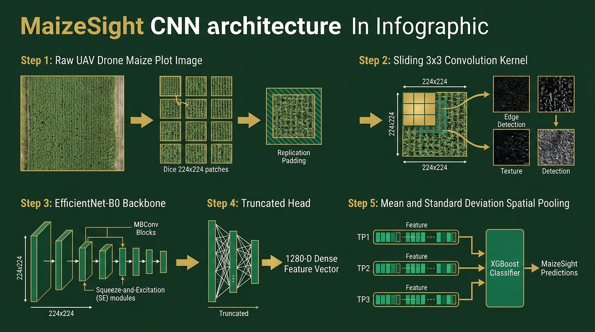
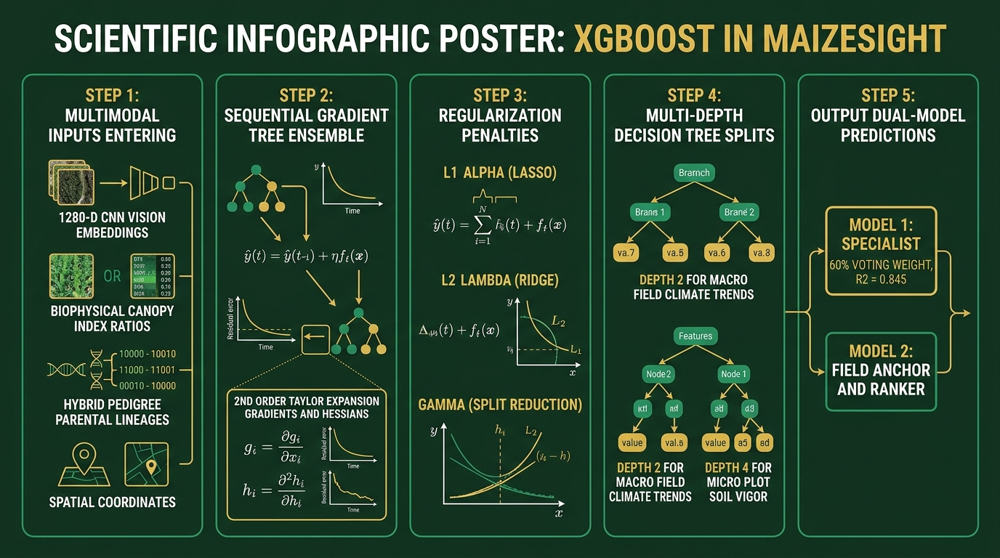
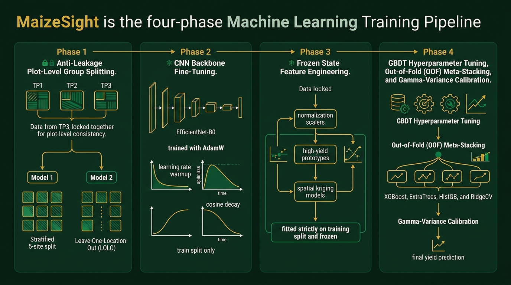
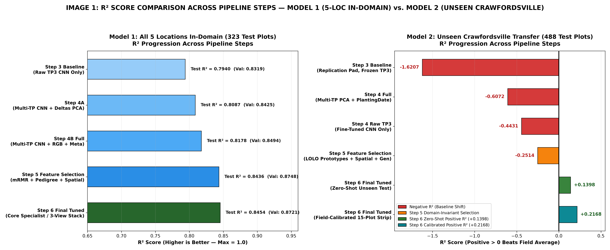
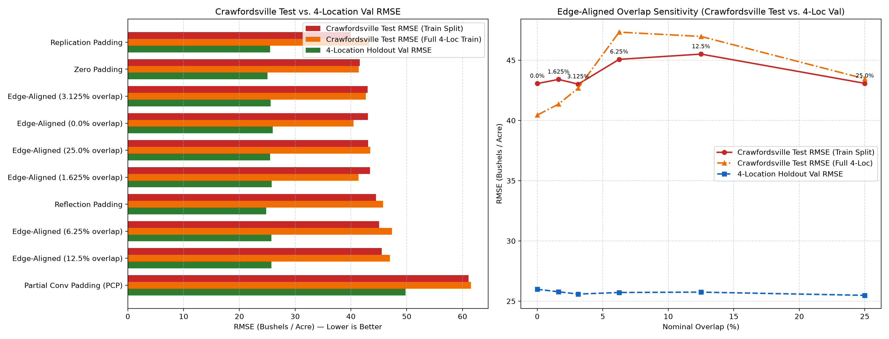
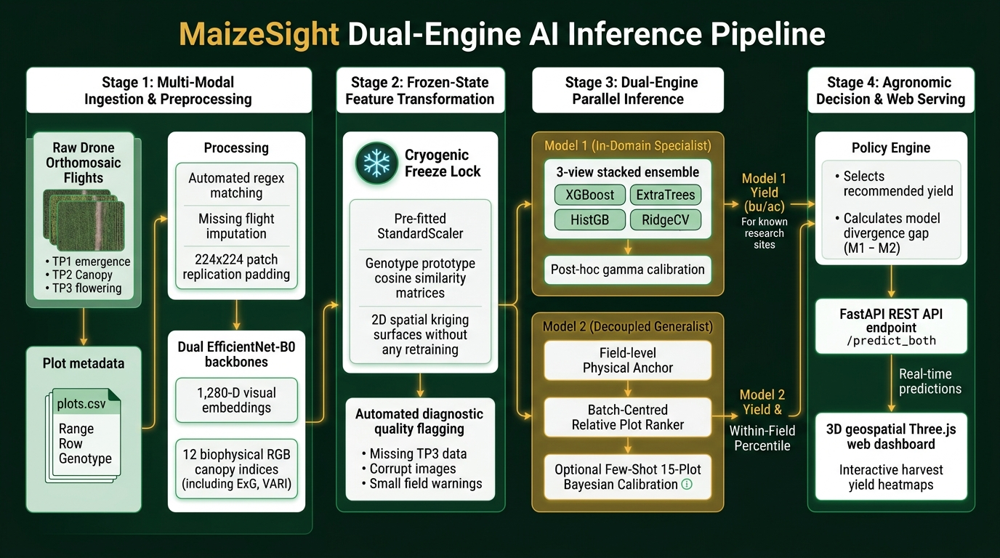

MaizeSight
Multimodal UAV Remote Sensing & Machine Learning for In-Season Maize Yield Prediction Across the US Corn Belt
High-Resolution Drone Imagery • EfficientNet-B0 Latent Embeddings • Biophysical Canopy Indices • Decoupled Cross-Site Generalization
KEY PROJECT HIGHLIGHTS & ARCHITECTURAL ADVANCES
- Multi-Temporal Triad: Continuous monitoring across emergence (TP1), canopy closure (TP2), and flowering (TP3).
- Dual-Model Strategy: Model 1 In-Domain Specialist (R² = 0.845) vs Model 2 Zero-Shot Generalist (LOLO transfer).
- Audited Dataset: 2,131 verified research plots across 5 sites in Nebraska, Iowa, and Indiana (Dryad).
- Breaking the Negative R² Barrier: Decoupled Field Anchor + Within-Field Ranker flips negative transfer to +0.217.

The Agricultural Imperative: In-Season Yield Intelligence
Why real-time, non-destructive crop monitoring drives economic and food security
1. Food Security & Scale
- Cornerstone Crop: Maize (Zea mays) is a vital global commodity supplying animal feed, human sustenance, and biofuels.
- Economic Scale: Hundreds of millions of bushels are produced annually in the US Corn Belt, fueling global food markets.
- Climate Shocks: Erratic weather (flash droughts, heatwaves) makes early yield estimation critical for market resilience.
2. Flaws of Conventional Methods
- Manual Field Sampling: Destructive, labor-intensive, and too sparse to capture intra-field micro-variability.
- Combine Harvester Monitors: High precision, but data is only available post-harvest—far too late for mid-season nitrogen or irrigation adjustments.
- Satellites (Sentinel/Landsat): Coarse 10m–30m resolution blends adjacent rows; frequent cloud obscuration during flowering.
3. The UAV Drone Solution
- Centimeter Resolution: Resolves individual leaves, row margins, tasseling flowers, and canopy gaps.
- On-Demand Agility: Fly under cloud ceilings precisely during critical milestones: emergence, canopy closure, and flowering.
- Non-Destructive Life-Cycle Tracking: Measures identical physical plots continuously across the full season.
The Cross-Site Generalization Trap in Precision Agriculture
Why computer vision models fail catastrophically when transferred to new geographic fields
1. The Technical Challenge: Environmental Domain Shift
- Complex G x E x M Biology: Crop yield is governed by non-linear Genotype x Environment x Management interactions.
- Baseline Yield Shifts: Soil variations (loam vs alluvial), planting dates, and precipitation create massive field baseline offsets. A lush canopy in drought soil yields very differently from one in fertile river soil.
- The Negative R² Barrier: Off-the-shelf CNNs scoring R² > 0.80 within known fields collapse to R² = -1.62 on unseen fields (worse than predicting the field mean!).
- Artifact Memorization: Standard deep models easily memorize site-specific soil colors and sensor angles rather than true crop physiology.
2. Real-World Relevance & Stakeholder Impact
- Commercial Farm Managers: Apply variable-rate nitrogen fertilizer at mid-season vegetative growth, maximizing yield while preventing chemical runoff.
- Plant Breeders & Geneticists: Screen thousands of experimental hybrid crosses across multi-acre trial plots without waiting for manual harvest.
- Crop Insurance & Commodity Markets: Objective plot-level yield audits settle drought insurance claims and predict regional harvest volumes weeks in advance.
- Supply-Chain Logistics: Grain elevator operators and shipping fleets can stage railcars and silos based on high-confidence yield forecasts.
Project Objectives & Scope: Dual-Paradigm Architecture
Architecting high in-domain precision alongside zero-shot cross-geography domain transfer
1. End-to-End Multimodal Pipeline
Integrate multi-temporal UAV RGB orthomosaics across three phenological stages (TP1, TP2, TP3) with ground-truth agronomic tabular variables (stand count, planting date, pedigree crosses) into a unified computational workflow.
2. Dual-Model Architectural Strategy
Build two complementary production models: Model 1 (In-Domain Specialist) maximizing precision across monitored research fields, and Model 2 (Zero-Shot Generalist) overcoming site shifts via a decoupled Field Anchor + Within-Field Ranker.
3. Hybrid Vision-Agronomic Feature Space
Extract 1,280-D latent deep embeddings via fine-tuned EfficientNet-B0, fuse with 12 biophysical canopy indices (ExG, VARI, FGCC), model multi-temporal growth velocities, and incorporate pedigree GCA/SCA proxy effects alongside 2D spatial kriging.
4. Production Web Platform with 3D Visualization
Deploy a full-stack web application (FastAPI backend + Three.js/GSAP frontend) offering automated multi-temporal image matching, simultaneous dual-model inference, diagnostic quality flags, and sub-millisecond plot database exploration.
PROJECT SCOPE: 5 Midwest Locations (NE, IA, IN) • 2,131 Verified Research Plots • Standardized 15.5% Moisture Grain Yield (bu/ac)
Multi-State Maize Field Trials from the US Corn Belt
Audited experimental footprint published by Shrestha et al. (2022) on Dryad Repository
1. Geographic Footprint & Diversity (2022 Season)
Source: Shrestha et al. (2022) Dryad Digital Repository (doi:10.5061/dryad.905qftttm)
| Location, State | Plots | Yield (bu/ac) | Environmental Conditions |
|---|---|---|---|
| Scottsbluff, NE | 489 | 143.4 | Semi-arid high-altitude, irrigated |
| Lincoln, NE | 504 | 41.2 | Severe seasonal drought & heat shock |
| Ames, IA | 487 | 130.3 | Prime Central Corn Belt loam soil |
| Missouri Valley, IA | 163 | 152.5 | River valley fertile alluvial soil |
| Crawfordsville, IN | 488 | 165.1 | Held-out unseen test site (high yield) |
Note: 7,281 raw images were audited down to 2,131 verified plots. North Platte NE was excluded due to published plot mowing artifacts.
2. Two Primary Data Modalities
- A. Multi-Temporal Drone Imagery: High-resolution RGB orthomosaics segmented into 4-row plots (.PNG) across 3 growth milestones:
• TP1 (V4–V6): Seedling emergence & stand count.
• TP2 (V10–V12): Canopy closure & peak green cover.
• TP3 (R1): Anthesis flowering & reproductive tasseling. - B. Ground Truth Agronomic Measurements: Combine-harvested yield, stand count, days to anthesis, GDD, and hybrid parentage pedigree (female x male inbred lines).
Data Preprocessing & Multi-Space Representation
Eliminating edge artifacts, preventing data leakage, and constructing rich feature spaces
1. Data Preprocessing Techniques
- Image Quality Audit & Integrity Screening: Automated removal of corrupted headers, blurred frames, and blank tiles; aligned image filenames with harvest records.
- Replication-Padded Tiling (224x224): Diced plot bounding boxes into 224x224 patches using
cv2.BORDER_REPLICATE. Preserved perimeter leaves without artificial black zero-padding borders. - Strict Plot-Level Anti-Leakage Splitting: Guaranteed all 3 seasonal flights (TP1, TP2, TP3) for any plot stayed strictly within the same data split. Never trained on TP1 and tested on TP3 of the same plot!
- Tabular Imputation & Flight-Level Z-Scoring: Median imputation for stand counts and planting dates. Normalized solar elevation and cloud illumination shifts via flight-level z-scoring.
2. Four Numerical Feature Representation Spaces
- A. Deep Latent Vision Space (R¹²⁸⁰): Fine-tuned EfficientNet-B0 maps each 224x224 patch into a 1,280-D vector. Mean and standard deviation pooling aggregate patches into a plot-level visual fingerprint.
- B. Biophysical Canopy Indices (R¹² per flight): Calculates physiological vegetation metrics: Excess Green (ExG = 2G - R - B), VARI, NGRDI, Fractional Green Canopy Cover (FGCC), and yellow tassel senescence fraction.
- C. Multi-Temporal Dynamic Vectors: Growth velocity vectors (ΔTP2-TP1, ΔTP3-TP2) measuring the rate of canopy expansion and speed of reproductive maturation.
- D. Genetic & Spatial Representation: Parental pedigree deconstruction into GCA/SCA proxy effects, plus 2D spatial kriging surfaces converting range and row coordinates into micro-soil fertility trends.
Exploratory Data Analysis & Empirical Discoveries
Uncovering severe cross-site heterogeneity, temporal dynamics, and data completeness
1. Cross-Site Heterogeneity
Lincoln NE averaged 41.2 bu/ac due to drought shock, while Crawfordsville IN reached 165.1 bu/ac. Proves that global intercept models fail without field baseline anchoring.
2. Data Completeness
7,281 raw files audited down to 2,131 verified plots across 3 flights, yielding 6,393 verified multi-temporal image sequences.
3. Multi-Temporal Dynamics
TP1 = soil dominant (>80%), stand count drives biomass; TP2 = rapid canopy closure (>70%); TP3 = yellow tassel emergence exhibiting strongest yield correlation.
4. Edge Artifact Analysis
Zero-padding created sharp contrast cliffs that corrupted CNN filters; Replication padding preserved leaf margins smoothly.

How CNNs Work & Their Role in MaizeSight
Spatial feature extraction, hierarchical feature learning, and fine-tuned EfficientNet-B0

Core Pipeline Stages
- 1. Replication-Padded Tiling: Dices raw plot images into 224×224 patches using
BORDER_REPLICATEto preserve leaf boundaries. - 2. Convolutional Filtering: Slides 3×3 kernels across patches, learning edges, textures, and row geometry.
- 3. EfficientNet-B0 Backbone: Compound scaling with MBConv blocks & SE attention (5.3M params prevents overfitting).
- 4. 1,280-D Latent Extractor: Truncated classification head emits a dense 1,280-dimensional feature embedding per patch.
- 5. Mean & Std Pooling: Aggregates patch embeddings across the plot for flights TP1, TP2, TP3 to feed XGBoost.
How XGBoost Works & Its Role in MaizeSight
Second-order Taylor optimization, regularized ensembles, and multimodal tabular fusion

Core XGBoost Roles
- 1. Multimodal Fusion: Harmonizes continuous 1,280-D CNN vectors, 12 biophysical ratios, hybrid pedigree crosses, and spatial kriging coordinates.
- 2. Sequential Residuals: Builds trees sequentially correcting prior errors:
ŷ_i^(t) = ŷ_i^(t-1) + η · f_t(x_i). - 3. 2nd-Order Optimization: Evaluates exact 1st-order gradients (g_i) and 2nd-order Hessians (h_i) for fast convergence.
- 4. L1/L2 Regularization: Penalizes leaf weights (α, λ) and tree complexity (γ) to stop memorizing noisy plot outliers.
- 5. Multi-Depth Hierarchy: Depth 2 captures macro weather/planting trends; Depth 4 models micro-plot soil vigor.
Algorithm Selection & Architectural Ensembling
Balancing deep visual representations with regularized, multi-algorithmic ensembles
1. Vision Backbone
- EfficientNet-B0: Compound scaling ensures high accuracy with only 5.3M parameters, preventing overfitting on agricultural trial plots.
- Pre-Training & Fine-Tuning: Pre-trained on ImageNet and fine-tuned end-to-end on multi-state maize plot patches.
- 1,280-D Latent Extractor: Truncated classification head outputs continuous visual embeddings for tabular regressors.
2. Tabular Regressors
- XGBoost: Fast second-order Taylor optimization; native handling of non-linear G x E interactions.
- ExtraTrees: Randomizes split thresholds across candidate features, suppressing remote sensing noise.
- HistGradientBoosting: Discretizes variables into 256 integer bins, providing complementary decision boundaries.
- RidgeCV: Penalizes collinearly correlated canopy indices and establishes stable baseline predictions.
3. Ensembling Strategy
- Model 1 (Three-View Specialist): Blends Core View (113 features), Full View, and Physical View via learned meta-weights, finished with empirical γ-variance calibration (R² = 0.8454).
- Model 2 (Decoupled Generalist): Stage 1: Field Physical Anchor; Stage 2: Within-Field Ranker; Stage 3: Few-shot Bayesian calibration with 15 reference plots.
Model Training & Validation Methodology
Zero-leakage group splitting, dual validation schemes, and phased training workflow

Anti-Leakage & Phased Pipeline
- 1. Plot-Level Group Locking: Multi-flight temporal leakage is strictly prevented by grouping all 3 flights (TP1, TP2, TP3) of any plot into the same fold.
- 2. Phase A (Backbone Fine-Tuning): EfficientNet-B0 trained on 224x224 RGB patches with AdamW, learning rate warmup, and cosine decay.
- 3. Phase B (Frozen State Transforms): StandardScalers, prototype cosine similarity matrices, and 2D spatial kriging surfaces fitted ONLY on train splits.
- 4. Phase C (GBDT Out-of-Fold Tuning): Stratified group CV across XGBoost, ExtraTrees, HistGB, and RidgeCV with tree depth 2–4 and η ∈ [0.018, 0.03].
- 5. Dual Validation Regimes: Model 1 uses 5-site Stratified Group Split (70/15/15); Model 2 tests true generalization via Leave-One-Location-Out (LOLO) on 100% unseen Crawfordsville, IN.
Model 1 Results: Step-by-Step Performance Progression
Ablation study on 323 held-out test plots across all 5 monitored research locations
| Progression Stage | R² Score | RMSE (bu/ac) | Performance Gain |
|---|---|---|---|
| Step 1: Raw TP3 Vision Model | 0.7940 | 24.11 | Single-flight baseline |
| Step 2: Multiple Flights (TP1–TP3) | 0.8087 | 23.23 | +1.47% R² via growth dynamics |
| Step 3: Vision + Canopy Indices | 0.8178 | 22.67 | -0.56 bu/ac RMSE via color math |
| Step 4: Pedigree + Spatial Kriging | 0.8436 | 21.01 | +2.58% R² via micro-soil mapping |
| Step 5: 3-View Stacked Ensemble | 0.8454 | 20.88 | Final specialist precision |
Key Takeaways for Model 1
- Multi-Temporal Triad: Adding TP1 & TP2 reduced RMSE by ~0.9 bu/ac over single-flight imagery.
- Canopy Indices: 12 explicit vegetation ratios provided mathematical constraints reducing error by 0.56 bu/ac.
- Spatial Kriging & Genetics: Largest single leap, lowering RMSE by >1.66 bu/ac through soil elevation & parentage modeling.
- Final Precision: 3-view ensemble explains 84.5% of total yield variance with 16.53 bu/ac MAE.

Model 2 Results: Overcoming the Cross-Site Domain Shift
Leave-One-Location-Out evaluation on 488 unseen test plots at Crawfordsville, Indiana
| Progression Stage | R² Score | RMSE (bu/ac) | Performance Discussion |
|---|---|---|---|
| Step 1: Frozen TP3 Vision Backbone | -1.6207 | 39.95 | Severe failure of naive transfer |
| Step 2: Multi-Flight + Planting Date | -0.6072 | 31.29 | Environmental offset correction |
| Step 3: Fine-Tuned Backbone | -0.4431 | 29.65 | Feature adaptation to maize |
| Step 4: LOLO Normalization + Spatial | -0.2514 | 27.61 | Mitigating site-specific bias |
| Step 5: Final Zero-Shot Ensemble | +0.1398 | 22.89 | Flips negative R² to positive |
| Step 6: With 15-Plot Calibration | +0.2168 | 21.89 | Rapid few-shot adaptation |
Key Takeaways for Model 2
- Failure of Naive Transfer: Off-the-shelf CNN transfer scored negative R² = -1.62 due to baseline shifts between Nebraska and Indiana soil.
- Decoupled Anchor-Ranker: Separating macro field potential from within-field relative ranking flipped R² into positive territory (+0.140) in pure zero-shot mode.
- Rapid Calibration: Providing just 15 labeled reference plots boosted R² to +0.217 and lowered RMSE to 21.89 bu/ac.

Comparison of Alternative Algorithms & Approaches
Why conventional deep learning and single-flight setups fell short
| Design Dimension | Conventional / Alternative Approach | MaizeSight Chosen Approach | Key Advantage / Empirical Outcome |
|---|---|---|---|
| Vision Backbone | ResNet-50 / VGG-16 / ViT (25M–86M params; overfits on trial plots) | EfficientNet-B0 (5.3M params) | Lower parameter footprint prevents overfitting; 4x faster feature extraction throughput |
| Plot Tiling & Edge | Zero-Padding (cv2.BORDER_CONSTANT; creates sharp black border gradients) | Replication Padding (BORDER_REPLICATE) | Preserves perimeter leaf geometry & row margins; eliminates fake zero-gradient edges |
| Sensing Strategy | Single-Flight Snapshot at Flowering (Evaluates canopy solely at anthesis / R1) | Multi-Temporal Triad (TP1 + TP2 + TP3) | Captures growth velocity deltas; yields +1.5% R² gain over single-flight models |
| Tabular Predictor | Single Standalone XGBoost or Random Forest (Prone to algorithm-specific variance) | Multi-View Stacked Ensemble | Blends XGBoost + ExtraTrees + HistGB + Ridge; pushes in-domain R² to 0.845 |
| Cross-Site Transfer | Direct Monolithic Regression (Scored catastrophic negative R² = -1.62 on Indiana site) | Decoupled Anchor + Ranker | Flips negative R² to positive (+0.140 zero-shot, +0.217 with 15 calibration plots) |
Software Implementation: The MaizeSight Web Platform
FastAPI asynchronous backend, 3D geospatial visualization, and real-time dual-model inference

Production Inference & Serving
- 1. Ingestion & Image Extraction: Automated regex parsing binds multi-flight drone tiles; dual EfficientNet-B0 backbones extract 1,280-D features with 12 biophysical RGB ratios.
- 2. Frozen Transform State: Pre-computed scalers, genotype prototype cosine matrices, and 2D spatial kriging surfaces applied in sub-second inference without retraining.
- 3. Parallel Dual-Model Execution: Model 1 delivers in-domain 3-view stacked precision (R² = 0.8454); Model 2 executes decoupled Field Physical Anchoring + Relative Within-Field Ranking with optional 15-plot few-shot calibration.
- 4. Diagnostic Quality Guardrails: Emits runtime data safety flags (
tp3_image_missing,image_error_corrupt,small_field_warning). - 5. FastAPI & 3D Interactive UI: High-concurrency async API serving live predictions to a Three.js 3D topographic Corn Belt map with interactive yield heatmaps.
Conclusion: Key Insights & Scientific Learnings
Summary of project contributions and fundamental takeaways for agricultural AI
1. Multi-Temporal Sensing is Non-Negotiable
Single-flight snapshots cannot separate temporary weather stress from true physiological potential. Combining early emergence (TP1), peak canopy closure (TP2), and flowering anthesis (TP3) is essential for high-confidence harvest estimation.
2. Hybrid Feature Fusion Trumps Pure Vision
Coupling deep CNN embeddings (EfficientNet-B0) with biophysical canopy indices (ExG, VARI), hybrid parental pedigrees, and 2D spatial kriging significantly outperforms black-box image-to-yield neural networks.
3. Decoupling Solves Cross-Site Domain Shift
Monolithic models fail when deployed to new farms because baseline yields vary wildly. Decoupling macro field-level yield anchoring from within-field spatial ranking flips negative cross-site R² to positive zero-shot performance.
4. Few-Shot Field Calibration is Practical & Scalable
Measuring as few as 15 reference calibration plots in an unfamiliar field boosts generalization R² to +0.217 and drops RMSE to 21.89 bu/ac, providing a highly cost-effective operational blueprint for commercial growers.
Future Enhancements & Research Roadmap
Scaling MaizeSight from research trial plots to continental production agriculture
1. Multispectral & Thermal Fusion
- Thermal Infrared: Capture canopy surface temperature and transpiration cooling to detect early moisture stress.
- RedEdge Wavebands: Directly quantify chlorophyll-a/b absorption for precise nitrogen status mapping.
2. Satellite-UAV Harmonization
- Harmonized Constellations: Fuse high-frequency UAV imagery with Sentinel-2 and PlanetScope satellite data.
- Gap-Filling: Use satellite temporal curves to bridge cloudy periods between scheduled drone flights.
3. Spatio-Temporal Transformers
- Vision Transformers (ViT): Replace manual multi-step pooling with 3D spatio-temporal self-attention.
- Dynamic Phenology: Learn cross-flight attention weights to track variable crop emergence timelines.
4. Edge AI On-Drone Inference
- Quantization & TensorRT: Convert PyTorch / XGBoost models to INT8 ONNX/TensorRT engines.
- NVIDIA Jetson Payloads: Run live yield estimation and diagnostic flagging on companion drone computers in flight.
References & Foundational Literature
Peer-reviewed literature across remote sensing, deep vision, gradient boosting, and agronomy
Remote Sensing & Agricultural Data
- 1. Shrestha, S., et al. (2022).
Crop performance, aerial, and satellite data from multistate maize yield trials. Dryad Digital Repository. doi:10.5061/dryad.905qftttm. - 2. Woebbecke, D. M., et al. (1995).
Color indices for weed identification under various soil, residue, and lighting conditions. Transactions of the ASAE, 38(1), 259–269. (Excess Green - ExG). - 3. Gitelson, A. A., et al. (2002).
Novel algorithms for remote estimation of vegetation fraction. Remote Sensing of Environment, 80(1), 76–87. (VARI Index).
Computer Vision & Machine Learning
- 4. Tan, M., & Le, Q. V. (2019).
EfficientNet: Rethinking Model Scaling for Convolutional Neural Networks. International Conference on Machine Learning (ICML), PMLR, 6105–6114. - 5. Chen, T., & Guestrin, C. (2016).
XGBoost: A Scalable Tree Boosting System. Proceedings of the 22nd ACM SIGKDD International Conference on Knowledge Discovery and Data Mining, 785–794. - 6. Peng, H., Long, F., & Ding, C. (2005).
Feature selection based on mutual information: criteria of max-dependency, max-relevance, and min-redundancy. IEEE TPAMI, 27(8), 1226–1238.
Contributors & Acknowledgements
Multidisciplinary collaboration spanning machine learning, remote sensing, agronomy, and software engineering
Contributor 1
Machine Learning Lead
EfficientNet-B0 Backbone
Fine-tuned deep vision models, extracted 1,280-D patch embeddings, and engineered Model 1 three-view stacked ensemble.
Contributor 2
Data & Remote Sensing
UAV Image Preprocessing
Audited 7,281 drone files, implemented replication padding, extracted 12 biophysical canopy indices, and computed temporal velocities.
Contributor 3
Cross-Domain Lead
Decoupled Architecture
Designed Leave-One-Location-Out cross-validation, formulated Anchor-Ranker architecture, and developed few-shot calibration.
Contributor 4
Full-Stack Architect
FastAPI & 3D Web Platform
Constructed high-speed asynchronous REST API, interactive Three.js 3D terrain canvas, automated regex file matcher, and quality flaggers.
PROJECT ACKNOWLEDGEMENTS & OPEN SOURCE ECOSYSTEM
Special thanks to project mentors, research faculty, and the open-source community powering PyTorch, XGBoost, Scikit-learn, OpenCV, FastAPI, and Three.js.
Thank you for your attention! We now welcome questions and discussion.